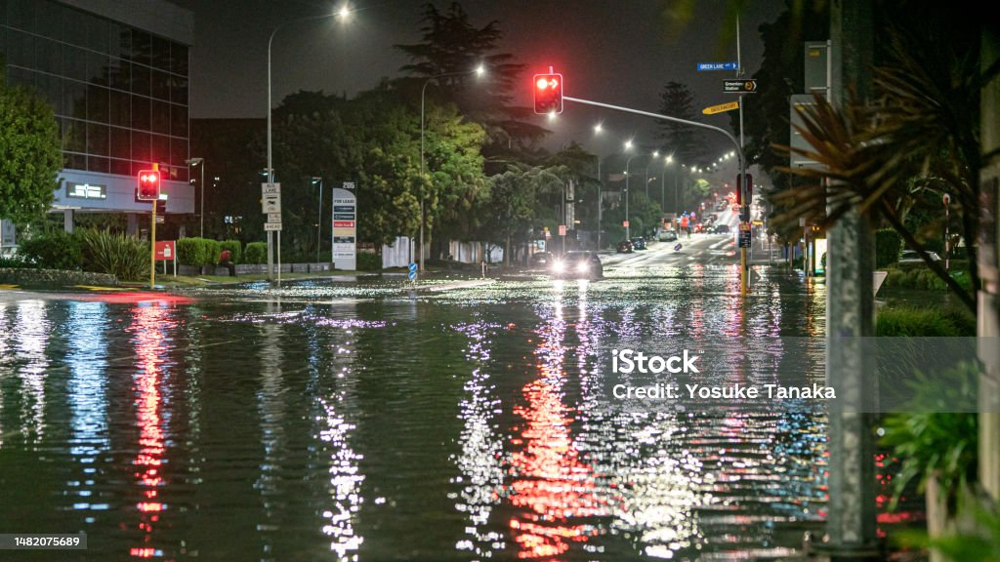
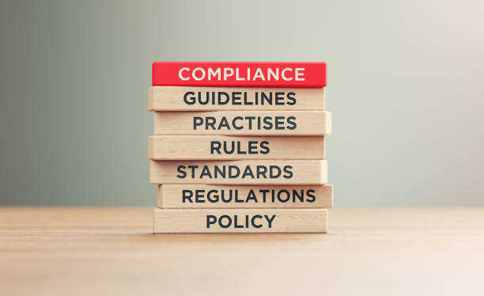

WDC Stormwater management refers to the practice of controlling and mitigating the runoff of rainwater, snowmelt, and other precipitation from impervious surfaces such as roads, parking lots, rooftops, and sidewalks. The primary goal of stormwater management is to prevent or reduce the negative impacts of stormwater runoff on the environment and human communities. This includes:
1.Flood Control: Managing stormwater helps prevent or minimize flooding in urban and suburban areas, which can damage property and pose risks to public safety.
2.Water Quality Protection: Stormwater often picks up pollutants like sediment, chemicals, and oil as it flows over surfaces. Effective stormwater management aims to remove or treat these contaminants to protect water quality in rivers, lakes, and oceans.

3.Erosion Control: Uncontrolled stormwater runoff can cause erosion, which can lead to soil loss and degradation of natural habitats. Proper stormwater management techniques help reduce erosion and preserve landscapes.

4.Habitat Preservation: Managing stormwater can create opportunities to design and restore natural habitats, such as wetlands, ponds, and vegetated buffers, which can benefit wildlife and biodiversity.

5.Sustainable Urban Development: Incorporating stormwater management into urban planning can help create more sustainable and resilient cities, promoting green infrastructure practices like permeable pavements, rain gardens, and retention ponds.

6.Compliance with Regulations: Many regions have regulations and standards in place to control stormwater runoff, with specific requirements for construction projects, industrial facilities, and municipalities to manage stormwater effectively.
Stormwater management strategies often include the use of engineered systems such as detention basins, retention ponds, stormwater treatment devices, and drainage infrastructure. Additionally, green infrastructure techniques, like vegetated swales, permeable surfaces, and rooftop gardens, are increasingly used to mimic natural hydrological processes and reduce the impact of urbanization on the environment. Overall, stormwater management is a critical aspect of sustainable urban and environmental planning, helping to balance the needs of development with the protection of natural resources.